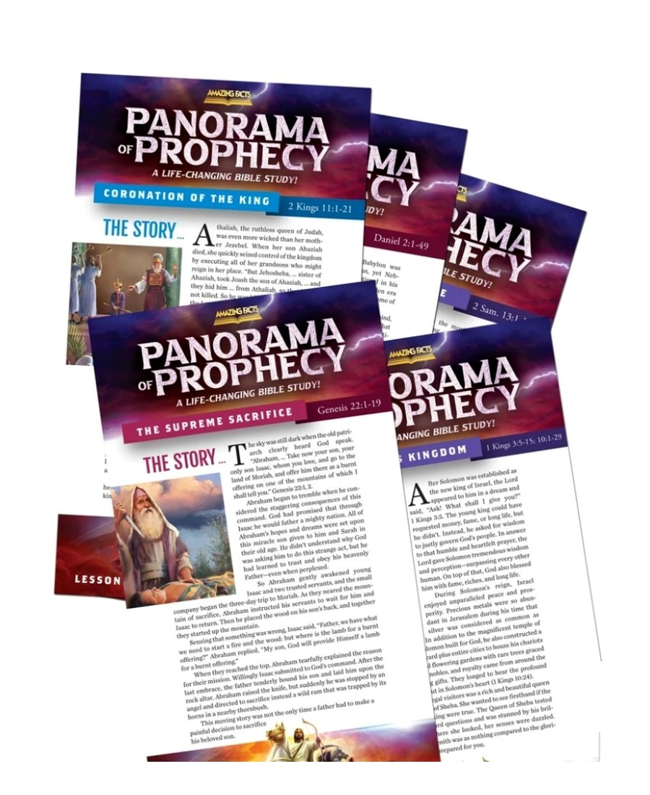

Get to Know God for Yourself
Move beyond inherited assumptions and discover who God is, what He is like, and how to build a real relationship with Him.
You can build a successful life and still wonder why something feels missing. Explore clear, Bible-based answers privately, thoughtfully, and at your own pace.

Why am I here?
Can I know God for myself?
What does prophecy reveal?
How can I face the future with peace?
Achievement can provide comfort. Relationships can provide companionship. Experiences can provide excitement. But none of them were designed to carry the full weight of your identity, purpose, and hope.
The next goal is reached. The next distraction loses its effect. And the questions you postponed begin asking for an honest answer.
“What if the restlessness is not a problem to suppress—but an invitation to investigate?”
The series leads you directly through Scripture, one subject at a time, so you can examine the evidence and reach informed conclusions for yourself.
Move beyond inherited assumptions and discover who God is, what He is like, and how to build a real relationship with Him.
See the Bible’s panoramic view of history, the times in which we are living, and what Scripture reveals about the future.
Discover how faith in Christ provides stability, forgiveness, confidence, and hope in an unpredictable world.
Explore biblical answers about identity, purpose, suffering, truth, salvation, and the meaning of life.
See how the major themes of Scripture connect in one consistent story of redemption, restoration, and hope.
Understand what the Bible says about the return of Jesus and how to be ready without panic, hype, or speculation.
You do not need to accept someone else’s conclusions. The guides are designed to help you read the key passages, follow the evidence step by step, and separate biblical teaching from popular assumptions.
Complete the short form and your printed Bible study guides will be prepared for delivery.
Your information will be treated with respect and used to fulfill your request and provide relevant communication about the guides.
They postpone the questions. They stay occupied. They tell themselves they will explore spiritual things when life becomes less demanding—but life rarely becomes less demanding.
There is no pressure to have everything figured out today. Just take the next honest step.
Send the Guides to My DoorClear Bible study should feel inviting—not complicated or pressured.
Yes. There is no charge for the Panorama of Prophecy guides, and no payment information is required.
No. The guides are available to anyone who wants to understand the Bible more clearly.
No. The series is designed to be approachable whether you are opening the Bible for the first time or returning after many years.
The guides present Bible-based teaching with Scripture as the foundation. You are encouraged to read the passages, examine the evidence, and evaluate each subject for yourself.
Your request will be reviewed and the Panorama of Prophecy Bible Study Guides will be prepared for delivery. You may also receive helpful communication related to your request and the series.
Purpose. Peace. Truth.